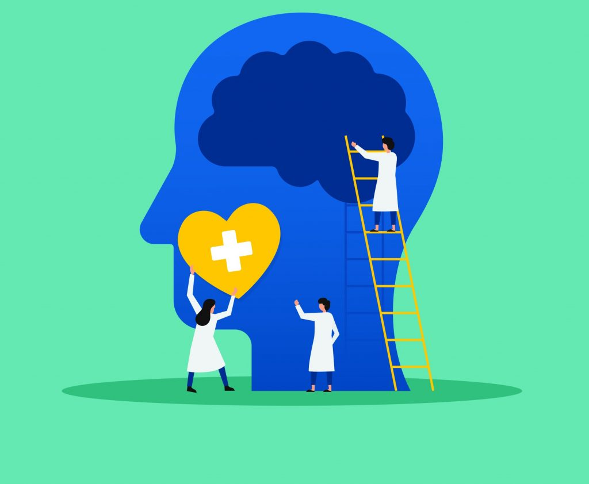
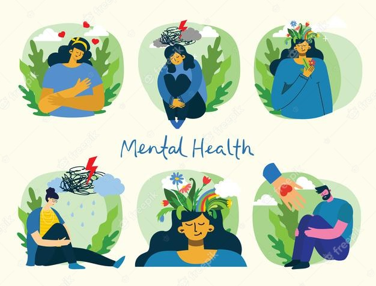

La salud mental incluye nuestro bienestar emocional, psicológico y social. Afecta la forma en que pensamos, sentimos y actuamos cuando enfrentamos la vida.
La salud mental es un estado de bienestar en el que la persona realiza sus capacidades y es capaz de hacer frente al estrés normal de la vida, de trabajar de forma productiva y de contribuir a su comunidad.
La salud mental se relaciona con el raciocinio, las emociones y el comportamiento frente a diferentes situaciones de la vida cotidiana. También ayuda a determinar cómo manejar el estrés, convivir con otras personas y tomar decisiones importantes. Al igual que otras formas de salud, la salud mental es importante en todas las etapas de la vida, desde la niñez y la adolescencia hasta la edad adulta y la madurez. De acuerdo a estadísticas de la OMS, los problemas de salud mental constituyen alrededor del 15% de la carga mundial de la enfermedad.3 El déficit en la salud mental contribuiría a muchas enfermedades somáticas y afectivas como la depresión o la ansiedad.
El tema de la salud mental, además, no concierne sólo a los aspectos de atención posterior al surgimiento de desórdenes mentales evidentes, sino que corresponde además al terreno de la prevención de los mismos con la promoción de un ambiente sociocultural determinado por aspectos como la autoestima, las relaciones interpersonales y otros elementos que deben venir ya desde la educación más primaria de la niñez y de la juventud. Esta preocupación no solo concierne a los expertos tales como psicopedagogos y psicólogos, sino que forma parte de las responsabilidades del gobierno de una nación, de la formación en el núcleo familiar, de un ambiente de convivencia sana en el vecindario, de la responsabilidad asumida por los medios de comunicación y de la consciente guía hacia una salud mental en el colegio y en los espacios de trabajo y estudio en general.
La motivación es un elemento indispensable a la hora de estudiar porque nos ayuda a vencer cualquier tipo de dificultad o contratiempo.
Estudiar no es una tarea sencilla, requiere de esfuerzo, ganas, perseverancia y sobre todo motivación para vencer cualquier dificultad y avanzar hacia la meta. Es por ello que decimos que la motivación es indispensable para canalizar el esfuerzo, la energía y la conducta en general del estudiante hacia el logro de los objetivos de aprendizaje .
La motivación es la fuerza que empuja nuestro comportamiento y toda motivación parece constar de tres elementos básicos: dirección, intensidad y persistencia.
- Dirección: este elemento hace referencia a la meta hacia la cual estamos motivados. Para que la dirección sea la apropiada, el objetivo debe estar bien definido desde un primer momento, en este caso se trata de estudiar un tema o una materia en particular. Por regla general, a las personas les motiva dedicar tiempo a algo que tiene una finalidad específica, un propósito hacia la cual apuntar sus acciones.
- Intensidad: mediante este elemento la dirección elegida toma fuerza. La intensidad o fuerza motivacional depende de la percepción que cada persona tiene sobre la probabilidad de que su esfuerzo dará un buen resultado. Es decir que si creemos firmemente en una determinada premisa estaremos más motivados y perseguiremos la meta con mayor intensidad.
“La motivación es un estado de ánimo que hace que la conducta de una persona cambie y se active para
conseguir unas metas concretas que se ha marcado. Esa energía es la que consigue que una persona realice
todas las acciones necesarias para culminar su objetivo”.
Ten claros tus objetivos; la satisfacción del logro es una buena inyección de confianza y de motivación
(si es necesario, establece cuántos capítulos o secciones estudiarás en un plazo de tiempo determinado,
por ejemplo, media hora).
No olvides estos objetivos y controla tu mente (evita que la mente te controle a ti: aparta los
pensamientos que te distraigan del objetivo y recuerda qué es lo que quieres conseguir).
Utiliza el calendario de estudio para vencer la indecisión y la desgana.
Sé curioso con el tema que estás estudiando.
Intenta buscarle una aplicación práctica (La motivación es mayor si encuentras que la formación es útil,
práctica). Estudia cada tema como si tuvieras que dar una clase sobre él.
Prémiate cuando termines con la tarea planificada (un pequeño capricho puede actuar de acicate para
continuar).